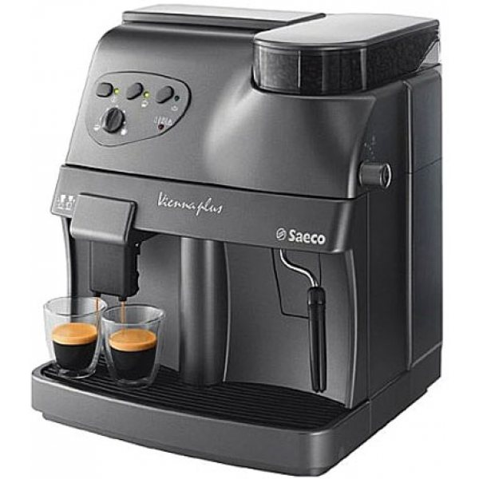
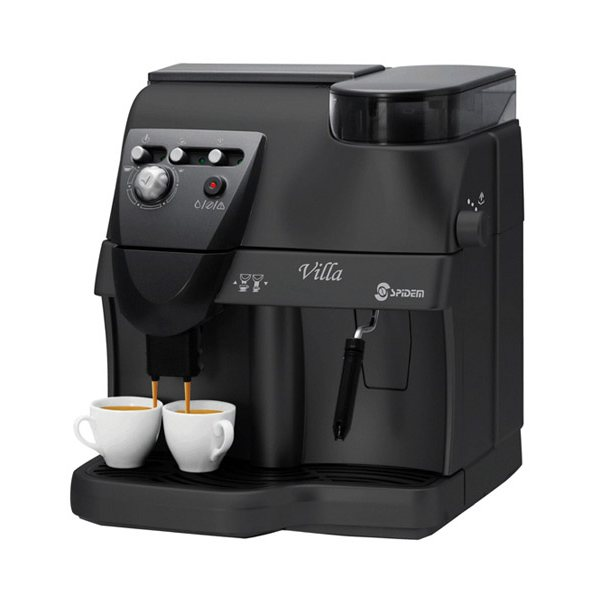
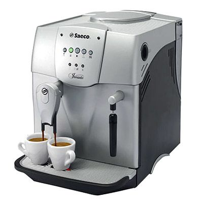
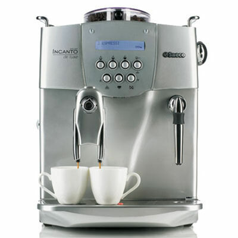
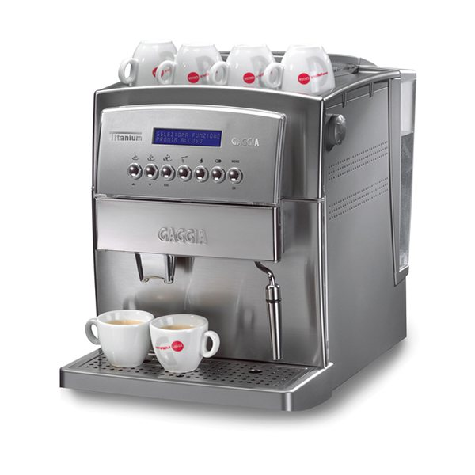

Кофемашина Saeco Vienna

Цена:4000 грн.Простая в управлении и неприхотливая в обслуживании кофемашина Saeco Vienna позволяет готовить качественный эспрессо простым нажатием кнопки. Любители капучино и латте смогут приготовить молочную пену при помощи встроенной трубки раздачи пара и горячей воды с насадкой панарелло, при этом переход в режим генерации пара происходит в считанные секунды, благодаря обновленному бойлеру кофемашины.
Кофемашина Spidem Villa

Цена:4500 грн.Автоматическая кофемашина Spidem Villa черного цвета каждое утро будет радовать Вашу семью вкусным ароматным кофе. Spidem Villa позволяет готовить большинство известных кофейных напитков благодаря насадке панарелло. Функция предварительного смачивания позволяет сильнее раскрыть аромат кофе, а встроенный регулятор количества кофе позволяет настраивать насыщенность готового напитка на Ваш вкус.
Кофемашина Saeco Incanto

Цена:4500 грн.В кофемашине Saeco Incanto готовить кофе из зерен очень быстро. Всего несколько секунд – и вкусный капучино или эспрессо готов. Эта кофеварка предназначена для дома или офиса небольшой компании: ее небольшой размер и лаконичный дизайн прекрасно подходят для любого оформления кухни. Пар подается по специальной трубке, снабженной особой насадкой «панарелло». Поэтому кофе готовится так быстро, а молочная пенка получается густая.
Кофемашина Saeco Incanto De Luxe S-Class

Цена:5000 грн.Эта кофемашина имеет функцию быстрого пара, что очень удобно в условиях приготовления латте, капучино в домашних условиях, а также дополнительным клапаном регулировки крепости кофе "системой SBS",что в свою очередь позволяет изменять крепость без регулировки помола. В данной модели Saeco Incanto De Luxe установлена кофемолка прямого помола сразу в рабочую группу, с керамическими ножами.
Кофемашина Gaggia Titanium

Цена:5500 грн.Автоматическая кофемашина Gaggia Titanium подарит возможность каждое утро наслаждаться традиционным эспрессо высочайшего качества. Стильный дизайн мощный корпус делают эту модель отличным выбором для почитателей молочно-кофейных напитков. С этой кофемашиной можно готовить две чашки кофе одновременно, регулируя крепость и объем любимого напитка. Прибор сделает процесс приготовления непревзойденного кофе простым и легким.
Кофемашина Delonghi Magnifica S

Приготовить свежий ароматный кофе, именно такой как любите только Вы, поможет замечательная кофеварка эспрессо Delonghi Magnifica S, которая, благодаря своим небольшим размерам, компактно расположится на кухонном столе. Потребляемая мощность составляет 1450 Вт, а создаваемое давление - 15 бар, это идеальное сочетание позволяет получить вкусный натуральный напиток. В Delonghi Magnifica S предусмотрено 13 степеней помола кофе.